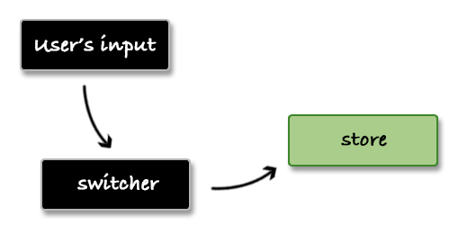

One-way direction data flow
One-way direction data flow is a pattern that works nicely with React. It is around the idea that the components do not modify the data that they receive. They only listen for changes of this data and maybe provide the new value but they do not update the actual data. This update happens following another mechanism in another place and the component just gets re-rendered with the new value.
Let's for example get a simple Switcher component that contains a button. If we click it we have to enable a flag in the system.
class Switcher extends React.Component {
constructor(props) {
super(props);
this.state = { flag: false };
this._onButtonClick = e => this.setState({
flag: !this.state.flag
});
}
render() {
return (
<button onClick={ this._onButtonClick }>
{ this.state.flag ? 'lights on' : 'lights off' }
</button>
);
}
};
// ... and we render it
function App() {
return <Switcher />;
};
At this moment we have the data inside our component. Or in other words, Switcher is the only one place that knows about our flag. Let's send it out to some kind of a store:
var Store = {
_flag: false,
set: function(value) {
this._flag = value;
},
get: function() {
return this._flag;
}
};
class Switcher extends React.Component {
constructor(props) {
super(props);
this.state = { flag: false };
this._onButtonClick = e => {
this.setState({ flag: !this.state.flag }, () => {
this.props.onChange(this.state.flag);
});
}
}
render() {
return (
<button onClick={ this._onButtonClick }>
{ this.state.flag ? 'lights on' : 'lights off' }
</button>
);
}
};
function App() {
return <Switcher onChange={ Store.set.bind(Store) } />;
};
Our Store object is a singleton where we have helpers for setting and getting the value of the _flag property. By passing the setter to the Switcher we are able to update the data externally. More or less our application workflow looks like that:

Let's assume that we are saving the flag value to a back-end service via the Store. When the user comes back we have to set a proper initial state. If the user left the flag as true we have to show "lights on" and not the default "lights off". Now it gets tricky because we have the data in two places. The UI and the Store have their own states. We have to communicate in both directions from the store to the switcher and from the switcher to the store.
// ... in App component
<Switcher
value={ Store.get() }
onChange={ Store.set.bind(Store) } />
// ... in Switcher component
constructor(props) {
super(props);
this.state = { flag: this.props.value };
...
Our workflow changes to the following:

All this leads to managing two states instead of one. What if the Store changes its value based on other actions in the system. We have to propagate that change to the Switcher and we increase the complexity of our app.
One-way direction data flow solves this problem. It eliminates the multiple places where we manage states and deals with only one which is usually the store. To achieve that we have to tweak our Store object a little bit. We need logic that allows us to subscribe for changes:
var Store = {
_handlers: [],
_flag: '',
subscribe: function(handler) {
this._handlers.push(handler);
},
set: function(value) {
this._flag = value;
this._handlers.forEach(handler => handler(value))
},
get: function() {
return this._flag;
}
};
Then we will hook our main App component and we'll re-render it every time when the Store changes its value:
class App extends React.Component {
constructor(props) {
super(props);
this.state = { value: Store.get() };
Store.subscribe(value => this.setState({ value }));
}
render() {
return (
<div>
<Switcher
value={ this.state.value }
onChange={ Store.set.bind(Store) } />
</div>
);
}
};
Because of this change the Switcher becomes really simple. We don't need the internal state and the component may be written as a stateless function.
function Switcher({ value, onChange }) {
return (
<button onClick={ e => onChange(!value) }>
{ value ? 'lights on' : 'lights off' }
</button>
);
};
<Switcher
value={ Store.get() }
onChange={ Store.set.bind(Store) } />
Final thoughts
The benefit that comes with this pattern is that our components become dummy representation of the store's data. There is only one source of truth and this makes the development easier. If you are going to take one thing from this book I would prefer to be this chapter. The one-direction data flow drastically changed the way of how I think when designing a feature so I believe it will have the same effect on you.